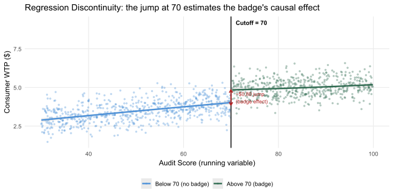

▶ Simulate 1,200 products near the 70-point certification threshold
set.seed(2024)
N_rdd <- 1200; cutoff <- 70; true_jump <- 0.80
# ── YOUR DATA: replace audit_score with your running variable (the continuous
# score that determines treatment assignment), cutoff with the actual policy
# threshold, and WTP_rdd with your outcome variable.
# df_rdd must contain: the running variable, a 0/1 treatment indicator
# (= 1 if running variable >= cutoff), the outcome, and running = running - cutoff.
audit_score <- runif(N_rdd, 30, 100)
treat_rdd <- as.integer(audit_score >= cutoff)
WTP_rdd <- 4.0 + 0.02*(audit_score-cutoff) - 0.0003*(audit_score-cutoff)^2 +
true_jump*treat_rdd + rnorm(N_rdd, 0, 0.60)
WTP_rdd <- pmax(1, pmin(10, WTP_rdd))
df_rdd <- tibble(audit_score, treat_rdd, WTP_rdd, running=audit_score-cutoff)
# ── CHECK: plot outcome vs. running variable (as below) — a visible jump at
# the cutoff, with smooth trends on each side, is the visual signature of
# a valid RDD. Irregular or absent jumps warrant investigating the DGP.
df_rdd |>
ggplot(aes(x=audit_score, y=WTP_rdd, colour=factor(treat_rdd))) +
geom_point(alpha=0.30, size=0.9) +
geom_vline(xintercept=cutoff, linewidth=1, colour="grey30") +
geom_smooth(method="lm", formula=y~poly(x,2), se=TRUE, alpha=0.2) +
scale_colour_manual(values=c("0"=clr_ctrl,"1"=clr_eco),
labels=c("Below 70 (no badge)","Above 70 (badge)")) +
annotate("text", x=71, y=9.2, label="Cutoff = 70", hjust=0, size=3.5, fontface="bold") +
annotate("segment", x=70, xend=70, y=3.85, yend=4.85, colour="firebrick",
arrow=arrow(ends="both", length=unit(.2,"cm")), linewidth=0.8) +
annotate("text", x=71, y=4.35,
label=sprintf("~$%.2f jump\n(badge effect)", true_jump),
hjust=0, size=3, colour="firebrick") +
labs(x="Audit Score (running variable)", y="Consumer WTP ($)", colour=NULL,
title="Regression Discontinuity: the jump at 70 estimates the badge's causal effect") +
theme_mod3()